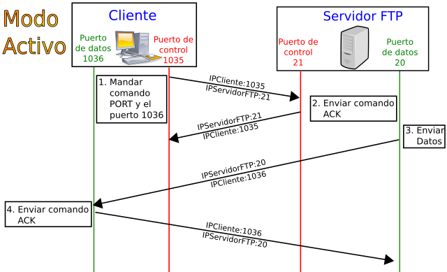
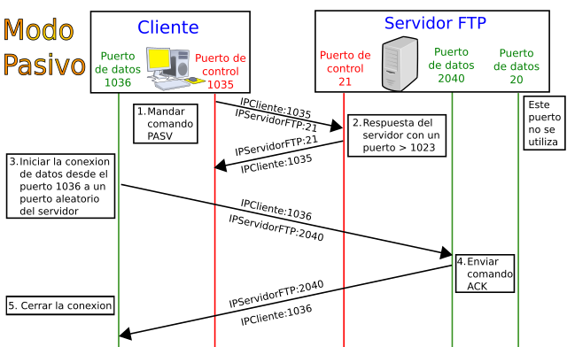

Instal·lació i Administració de Servidors de Transferència d'Arxius
1. Configuració del servei de transferència d'arxius
Un servidor de transferència d’arxius és com un pont digital entre ordinadors: permet enviar i rebre fitxers a través d’una xarxa mitjançant protocols dissenyats específicament per a aquesta funció. És una eina fonamental per publicar contingut web, compartir arxius amb altres usuaris o realitzar còpies de seguretat en ubicacions remotes.
Entre els protocols més habituals trobem:
- FTP (File Transfer Protocol): el més antic i encara molt present, tot i que no ofereix xifrat de dades per defecte.
- FTPS (FTP Secure): una evolució del FTP que incorpora una capa de seguretat basada en SSL/TLS.
- SFTP (SSH File Transfer Protocol): utilitza el canal segur d’SSH, fet que el converteix en una opció més moderna i fiable.
Per posar en marxa aquest servei, cal seguir alguns passos bàsics: instal·lar el programari del servidor (com vsftpd, ProFTPD o FileZilla Server), definir el port de connexió (21 per FTP o 22 per SFTP), establir el directori arrel per als usuaris, activar el xifrat corresponent (TLS/SSL o SSH) i ajustar els fitxers de configuració principals, com ara vsftpd.conf o proftpd.conf.
2. Permisos i quotes
La gestió de permisos i quotes és essencial per mantenir un servidor segur i estable. Cada usuari o grup ha de disposar únicament dels permisos que realment necessita: lectura (r), escriptura (w) i execució (x). Una configuració acurada d’aquests permisos evita accessos indeguts i problemes de seguretat.
A més, establir quotes de disc permet limitar l’espai disponible per a cada compte, prevenint saturacions o usos abusius del sistema. En entorns multiusuari, és recomanable “tancar” cada usuari dins del seu propi directori, una tècnica coneguda com a chroot jail, que impedeix accedir a altres àrees del sistema. Finalment, monitoritzar els registres (logs) ajuda a detectar intents d’intrusió o un ús anòmal dels recursos.
3. Tipus d'usuaris i accessos al servei
Un servidor FTP o SFTP pot treballar amb diversos tipus d’usuaris segons el nivell d’accés que es vulga oferir:
- Usuaris locals: són comptes del sistema operatiu que utilitzen les mateixes credencials per autenticar-se al servidor.
- Usuaris virtuals: gestionats únicament pel servei FTP, sense correspondència amb usuaris del sistema. S’emmagatzemen en fitxers o bases de dades.
- Accés anònim: permet la connexió sense credencials, habitualment amb accés de només lectura a un directori públic.
Com a norma general, és recomanable evitar l’accés anònim, aplicar el principi de mínim privilegi i exigir contrasenyes segures amb polítiques de caducitat periòdica.
4. Modes de connexió del client
El protocol FTP treballa amb dos canals de comunicació: un per a les ordres i un altre per a la transferència de dades. D’aquesta estructura deriven dos modes de connexió:
- Mode actiu: el client indica al servidor en quin port està escoltant, i aquest inicia la connexió de dades. Pot causar conflictes amb tallafocs.
- Mode passiu: el servidor indica un port i el client és qui inicia la connexió. És el mode preferit actualment per la seua compatibilitat amb NAT i tallafocs.

Figura 1. Mode actiu. Font: Por Gabiwxp - Trabajo propio, CC BY-SA 3.0, <https://commons.wikimedia.org/w/index.php?curid=5512810

Figura 2. Mode passiu. Font: Gabiwxp - Trabajo propio, CC BY-SA 3.0, https://commons.wikimedia.org/w/index.php?curid=5512764
Per garantir una connexió estable, convé definir un rang de ports passius i assegurar-se que estiguen oberts al tallafocs del servidor.
5. Protocol segur de transferència d'arxius
El FTP tradicional transmet dades en text pla, cosa que exposa credencials i informació sensible a possibles atacs. Per això, és fonamental emprar protocols segurs com:
- FTPS: que afegeix TLS/SSL al protocol FTP. Pot operar en mode explícit o implícit i manté compatibilitat amb molts clients FTP.
- SFTP: que utilitza el canal SSH per oferir un entorn completament xifrat, més senzill de configurar i de mantenir.
Els protocols segurs aporten beneficis clars: protecció de dades i credencials, prevenció d’atacs de tipus man-in-the-middle i autenticació més robusta, fins i tot amb claus públiques.
Per tant, és imprescindible desactivar l’FTP sense xifrat i utilitzar certificats vàlids i actualitzats.
6. Utilització de comandes i d'eines gràfiques
Eines en línia d'ordres
Els administradors sovint prefereixen treballar amb eines en mode text com ftp, sftp, lftp o scp. Aquestes permeten transferir fitxers, canviar de directori (cd), llistar continguts (ls), descarregar (get, mget) o pujar arxius (put, mput), i tancar la sessió amb bye. Són eines potents i ideals per a automatitzar processos.
Eines gràfiques
Per als usuaris menys tècnics, els clients amb interfície gràfica —com FileZilla, WinSCP o Cyberduck— ofereixen una experiència més intuïtiva. Permeten arrossegar fitxers, gestionar permisos i guardar credencials, simplificant les tasques de transferència puntuals o de manteniment.
7. Utilització del servei en el desplegament d'aplicacions web
El servei FTP o SFTP és una de les vies més habituals per desplegar aplicacions web. A través d’aquest sistema, els desenvolupadors poden pujar fitxers HTML, CSS, JavaScript o altres recursos directament al servidor de producció, mantenint el lloc sempre actualitzat.
És recomanable automatitzar el procés mitjançant scripts o eines de CI/CD, ajustar els permisos i propietaris després de cada pujada i realitzar còpies de seguretat abans de substituir versions anteriors. Aquest enfocament facilita desplegaments ràpids i segurs, sense necessitat de coneixements avançats en DevOps.
8. Documentació
Un servei de transferència d’arxius ben gestionat ha d’anar sempre acompanyat d’una documentació acurada. Aquesta ha d’incloure el llistat d’usuaris amb els seus permisos, la configuració actual del servidor (ports, directoris, quotes, seguretat), la ubicació dels fitxers de configuració, els procediments de connexió per als usuaris i un registre d’incidències i solucions aplicades.
Guardar aquesta documentació en un repositori Git és una bona pràctica: permet controlar canvis, mantindre versions i recuperar configuracions anteriors amb facilitat.